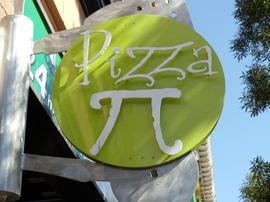
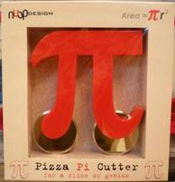

Pizza.py Toolkit
When the moon hits your eye like a big Pizza.py, that's amore
... (with apologies to Dean Martin)

(left) Pizza parlor sign in Victoria, BC
(right) Pizza cutting tool in ABQ science museum gift shop
This is the home page for the Pizza.py toolkit written in the
Python scripting language.
Pizza.py is a loosely integrated collection of tools, many of which
provide pre- and post-processing capability for the
LAMMPS molecular dynamics,
ChemCell cell modeling, and
SPPARKS kinetic Monte Carlo packages.
There are tools to create input files, convert between file formats,
process log and dump files, create plots, and visualize and animate
simulation snapshots. Software packages that are wrapped by Pizza.py,
so they can be invoked from Python, include GnuPlot,
MatLab, Raster3d, RasMol, and VMD.
The name Pizza.py is meant to evoke the aroma of a collection of
"toppings" that the user can combine in different ways on a "crust" of
basic functionality, with Python as the "cheese" that glues everything
together.
Pizza.py is distributed as an open source
code under the terms of the GPL license
and can be downloaded from this site.
Pizza.py runs on any machine with Python installed. Pizza.py
enhances the standard Python interpreter in a few simple ways. It's
tools are Python modules which can be invoked interactively, from
scripts, or from GUIs when appropriate. Some of the tools require
additional Python packages to be installed as part of your Python.
Others are wrappers on software packages (e.g. GnuPlot) which must be
available on your system. If you don't have these add-ons or don't
want to use a particular tool, you don't have to load it when Pizza.py
starts up. It's easy to modify or extend Pizza.py with new
functionality or new tools, which need not have anything to do with
LAMMPS or
ChemCell.
The chief author of Pizza.py is Steve Plimpton who can be
contacted at sjplimp at sandia.gov. Pizza.py is distributed by
Sandia National Laboratories, a US Department of Energy
(DOE) laboratory. Many of the tools were written by Matt Jones,
a BYU student who spent a summer at Sandia. Funding for Pizza.py
development has come from the DOE and is acknowledged
here.
The Pizza.py WWW site is hosted by Sandia, which has this Privacy and
Security statement.
Recent Pizza.py News
 (6/14) New sdata tool
for reading, creating, writing surface files for the SPARTA
Direct Simulation Monte Carlo (DSMC) code.
(6/14) New sdata tool
for reading, creating, writing surface files for the SPARTA
Direct Simulation Monte Carlo (DSMC) code.
- (11/10) New vmd tool
that is a wrapper on the popular "VMD visualization package", so that
it can be driven by Python and display
LAMMPS snapshots in real time.
- (4/07) New mdump
tool that reads in mesh files and their
associated nodal or element values for viz by other Pizza.py tools or
for output to Ensight format.
- (4/07) New cfg tool
that converts LAMMPS data/dump files to the CFG format used by the
AtomEye visualization
package. Thanks to Aidan Thompson (Sandia).
- (10/06) New ensight
tool that converts LAMMPS data/dump files to
the format used by the Ensight
visualization/animation packge.
- (10/06) Release of 1 Oct 2006 version
with new clog and cdata
tools for ChemCell pre- and post-processing, a
histo tool, and various other bug fixes and
minor upgrades.
- (11/05) Release of 7 Nov 2005 version
with 3d interactive visualization via OpenGL and a VCR-style GUI (see
the gl and vcr tools). The
OpenGL capability was added to Pizza.py thru the Python
PyOpenGL package.
- (10/05) Creation of a Pizza.py mailing
list on
SourceForge for posting questions about
Pizza.py and browsing past questions/answers in the
archive.
The new SourceForge project page for
Pizza.py also allows for
downloads
of the Pizza.py package. Here are instructions on
various ways the Pizza.py mailing list can be used.
Screenshot of several Pizza.py tools in action. Click on the small
image for a larger version.